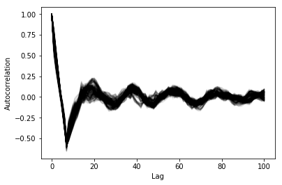

Clustering large number of time series.
Table of Contents
1 Preparing the data
import glob import inspect from os.path import join import itertools import pickle import matplotlib.pyplot as plt import numpy as np import pandas as pd import scipy.cluster.hierarchy as hcl from scipy.spatial.distance import squareform from scipy.stats.mstats import zscore from statsmodels.tsa.stattools import adfuller, pacf, acf import src.helpers as helpers
I have downloaded all the regions definitive annual data from 2013 to 2015, the consolidated 2016 data as well as the running 2017 data.
data_path = "data" data = pd.concat([ pd.read_table( file, encoding="iso8859_15", delimiter="\t", engine="python", index_col=False).iloc[1:-1, :] for file in glob.glob(join(data_path, "*.xls")) ])
data = data.reset_index(drop=True) data["Consommation"] = pd.to_numeric(data["Consommation"], errors='coerce') data = data.loc[~data["Consommation"].isnull(), :] data["Datetime"] = pd.to_datetime( (data["Date"] + '_' + data["Heures"]).apply(str), format='%Y-%m-%d_%H:%M') data["Date"] = pd.to_datetime((data["Date"]).apply(str), format='%Y-%m-%d') data["Heures"] = pd.to_datetime((data["Heures"]).apply(str), format='%H:%M', infer_datetime_format=False).dt.time
consommation = pd.pivot_table( data, values='Consommation', index='Datetime', columns=['Périmètre']) consommation = consommation.drop('France', axis=1)
1.1 Quality control
Removing all incomplete regions
# Good series have more than 99% data good_series = [ consommation.iloc[:, i].isnull().sum() / consommation.iloc[:, i].shape[0] < 0.99 for i in range(consommation.shape[1]) ] consommation = consommation.loc[:, good_series]
From around 2016, there are a lot of missing data. all records from that date were removed
start_bad_date = np.unique(np.where(consommation.isnull())[0])[0] bad_date = consommation.index[start_bad_date] consommation = consommation.iloc[:start_bad_date-1, :]
bad_date.date()
datetime.date(2016, 2, 29)
%matplotlib inline fig, ax = plt.subplots(4, 3, sharex=True, sharey=True) i = 0 row = 0 for column in consommation.columns: col = i % 3 consommation[column].plot(ax=ax[row, col]) i += 1 if col == 2: row += 1

Transforming the table from regions series to daily/regions series for each hour
consommation["date"] = consommation.index.date consommation["time"] = consommation.index.time consommation = pd.pivot_table(pd.melt(consommation, id_vars=["date", "time"]), index="date", values="value", columns=["Périmètre", "time"])
There is an autocorrelation of 7 days (weekly)
plt.figure() ax = plt.gca() for columns in consommation: plt.plot(acf(consommation.loc[:,columns].diff(7)[7:], nlags=100), alpha=0.05, color="black") ax.set_xlabel("Lag") ax.set_ylabel("Autocorrelation")
Text(0,0.5,'Autocorrelation')

def test_stationarity(timeseries): # Perform Dickey-Fuller test: print('Results of Dickey-Fuller Test:') dftest = adfuller(timeseries, autolag="AIC") dfoutput = pd.Series(dftest[0:4], index=['Test Statistic', 'p-value', '#Lags Used', 'Number of Observations Used']) for key, value in dftest[4].items(): dfoutput['Critical Value (%s)' % key] = value return dfoutput consommation = consommation.diff(7)[7:] test_stationarity(consommation.iloc[:, 1])
Test Statistic -6.134467e+00 p-value 8.250744e-08 #Lags Used 2.200000e+01 Number of Observations Used 1.124000e+03 Critical Value (1%) -3.436181e+00 Critical Value (5%) -2.864115e+00 Critical Value (10%) -2.568141e+00 dtype: float64
Data was transformed using z-score and weekly differential
consommation = consommation.apply(zscore, axis=0) consommation = consommation.loc[:, consommation.isnull().sum() == 0] consommation.index = pd.to_datetime(consommation.iloc[:, 0].index) consommation = consommation.asfreq("1d")
consommation.mean()[:5]
consommation.std()[:5]
2 Calculation of GCC
k = np.max([np.where(pacf(consommation.loc[:, colname]) < 0)[0][0] for colname, col in consommation.iteritems()]) k
print(inspect.getsource(helpers.k_matrix))
def k_matrix(ts, k): return np.array([ts[(shift):ts.shape[0] - k + shift] for shift in np.arange(0, k + 1)]).T
print(inspect.getsource(helpers.get_GCC))
def get_GCC(ts1, ts2, k): Xi = k_matrix(ts1, k) Xj = k_matrix(ts2, k) Xij = np.concatenate((Xi, Xj), axis=1) GCC = 1 - np.linalg.det(np.corrcoef(Xij, rowvar=False) ** (1 / 2 * (k + 1))) / ( np.linalg.det(np.corrcoef(Xi, rowvar=False) ** (1 / 2 * (k + 1))) \ * np.linalg.det(np.corrcoef(Xj, rowvar=False) ** (1 / 2 * (k + 1)))) return GCC
DM_GCC = np.zeros((consommation.shape[1], consommation.shape[1])) for i, j in itertools.combinations(range(consommation.shape[1]), 2): DM_GCC[i, j] = DM_GCC[j, i] = 1 - helpers.get_GCC(consommation.iloc[:, i], consommation.iloc[:, j], k) DM_GCC = pd.DataFrame(DM_GCC, index=consommation.columns, columns=consommation.columns)
3 Clustering
3.1 Determination of the number of clusters
linkage = hcl.linkage(squareform(DM_GCC), method="average")
plt.figure() plt.plot(range(1, len(linkage)+1), linkage[::-1, 2]) ax = plt.gca() ax.set_xlim([0,20]) ax.set_ylim([0,1]) ax.set_xlabel("Number of clusters") ax.set_ylabel("Between clusters distance")
Text(0,0.5,'Between clusters distance')

elbow = np.diff(linkage[::-1, 2], 2) n_clust1 = elbow.argmax()+2 elbow[elbow.argmax()] = 0 n_clust2 = elbow.argmax()+2 [n_clust1, n_clust2]
[8, 5]
3.2 Clustering methods comparison
from sklearn.manifold import TSNE n_clusters = n_clust1 clusters = hcl.fcluster(linkage, t=n_clusters, criterion="maxclust") tsne_2dim = TSNE(n_components=2, metric="precomputed").fit_transform(DM_GCC) plt.figure() plt.scatter(tsne_2dim[:, 0], tsne_2dim[:, 1], c=clusters, cmap=plt.cm.get_cmap('Paired', n_clusters), alpha=0.3) ax = plt.gca() ax.set_xlabel("x-tsne") ax.set_ylabel("y-tsne")
Text(0,0.5,'y-tsne')

n_clusters = n_clust2 clusters = hcl.fcluster(linkage, t=n_clusters, criterion="maxclust") tsne_2dim = TSNE(n_components=2, metric="precomputed").fit_transform(DM_GCC) plt.figure() plt.scatter(tsne_2dim[:, 0], tsne_2dim[:, 1], c=clusters, cmap=plt.cm.get_cmap('Paired', n_clusters), alpha=0.3) ax = plt.gca() ax.set_xlabel("x-tsne") ax.set_ylabel("y-tsne")
Text(0,0.5,'y-tsne')

from sklearn.cluster import SpectralClustering n_clusters = n_clust1 clusters = SpectralClustering(n_clusters, affinity="precomputed").fit_predict(DM_GCC) tsne_2dim = TSNE(n_components=2, metric="precomputed").fit_transform(DM_GCC) plt.figure() plt.scatter(tsne_2dim[:, 0], tsne_2dim[:, 1], c=clusters, cmap=plt.cm.get_cmap('Paired', n_clusters), alpha=0.3) ax = plt.gca() ax.set_xlabel("x-tsne") ax.set_ylabel("y-tsne")
Text(0,0.5,'y-tsne')

from sklearn.cluster import SpectralClustering n_clusters = n_clust2 clusters = SpectralClustering(n_clusters, affinity="precomputed").fit_predict(DM_GCC) tsne_2dim = TSNE(n_components=2, metric="precomputed").fit_transform(DM_GCC) plt.figure() plt.scatter(tsne_2dim[:, 0], tsne_2dim[:, 1], c=clusters, cmap=plt.cm.get_cmap('Paired', n_clusters), alpha=0.3) ax = plt.gca() ax.set_xlabel("x-tsne") ax.set_ylabel("y-tsne")
Text(0,0.5,'y-tsne')

from sklearn.cluster import KMeans n_clusters = n_clust1 eigen_values, eigen_vectors = np.linalg.eigh(DM_GCC) clusters = KMeans(n_clusters=n_clusters, init='k-means++').fit_predict(eigen_vectors[:, 2:4]) plt.figure() plt.scatter(tsne_2dim[:, 0], tsne_2dim[:, 1], c=clusters, cmap=plt.cm.get_cmap('Paired', n_clusters), alpha=0.3) ax = plt.gca() ax.set_xlabel("x-tsne") ax.set_ylabel("y-tsne")
Text(0,0.5,'y-tsne')

from sklearn.cluster import KMeans n_clusters = n_clust2 eigen_values, eigen_vectors = np.linalg.eigh(DM_GCC) clusters = KMeans(n_clusters=n_clusters, init='k-means++').fit_predict(eigen_vectors[:, 2:4]) plt.figure() plt.scatter(tsne_2dim[:, 0], tsne_2dim[:, 1], c=clusters, cmap=plt.cm.get_cmap('Paired', n_clusters), alpha=0.3) ax = plt.gca() ax.set_xlabel("x-tsne") ax.set_ylabel("y-tsne")
Text(0,0.5,'y-tsne')

from sklearn.cluster import DBSCAN for eps in np.arange(0.0001, 0.01, 0.0001): clusters = DBSCAN(eps=eps, min_samples=10, metric="precomputed").fit_predict(DM_GCC) n_clusters = len(np.unique(clusters[clusters>0])) if n_clusters == n_clust1: plt.figure() plt.scatter(tsne_2dim[:, 0], tsne_2dim[:, 1], c=clusters, cmap=plt.cm.get_cmap('Paired', n_clusters), alpha=0.3) ax = plt.gca() ax.set_xlabel("x-tsne") ax.set_ylabel("y-tsne") break

from sklearn.cluster import DBSCAN for eps in np.arange(0.0001, 0.01, 0.0001): clusters = DBSCAN(eps=eps, min_samples=10, metric="precomputed").fit_predict(DM_GCC) n_clusters = len(np.unique(clusters[clusters>0])) if n_clusters == n_clust2: plt.figure() plt.scatter(tsne_2dim[:, 0], tsne_2dim[:, 1], c=clusters, cmap=plt.cm.get_cmap('Paired', n_clusters), alpha=0.3) ax = plt.gca() ax.set_xlabel("x-tsne") ax.set_ylabel("y-tsne") break
from sklearn.cluster import DBSCAN for eps in np.arange(0.0001, 0.01, 0.0001): clusters = DBSCAN(eps=eps, min_samples=10, metric="precomputed").fit_predict(DM_GCC) n_clusters = len(np.unique(clusters[clusters>0])) if n_clusters == len(np.unique(consommation.columns.get_level_values("Périmètre"))): plt.figure() plt.scatter(tsne_2dim[:, 0], tsne_2dim[:, 1], c=clusters, cmap=plt.cm.get_cmap('Paired', n_clusters), alpha=0.3) ax = plt.gca() ax.set_xlabel("x-tsne") ax.set_ylabel("y-tsne") break

4 Mapping the clusters
n_clusters = n_clust2 clusters = hcl.fcluster(linkage, t=n_clusters, criterion="maxclust") consommation_clusters = pd.DataFrame(np.transpose([[series[0] for series in consommation.columns.values], [series[1] for series in consommation.columns.values], list(clusters)]), columns=["Region", "Time", "Cluster"])
region_cluster = consommation_clusters.groupby(by="Region")["Cluster"].value_counts().index.to_frame() region_cluster.index = region_cluster["Region"].values region_codes = pd.read_csv("./data/frenchRegions.csv") region_cluster["Region"].isin(region_codes["Region"]) region_cluster["region_match"] = region_cluster["Region"] region_codes = {} region_codes["Auvergne-Rhône-Alpes"] = [83, 82] region_codes["Bourgogne-Franche-Comté"] = [26, 43] region_codes["Bretagne"] = [53] region_codes["Centre-Val de Loire"] = [24] region_codes["Grand-Est"] = [42, 21, 41] region_codes["Hauts-de-France"] = [31, 22] region_codes["Ile-de-France"] = [11] region_codes["Normandie"] = [23, 25] region_codes["Nouvelle-Aquitaine"] = [72, 54, 74] region_codes["Occitanie"] = [91, 73] region_codes["PACA"] = [93] region_codes["Pays-de-la-Loire"] = [52]
import pygal from itertools import chain fr_chart = pygal.maps.fr.Regions() fr_chart.title = 'Regions clusters' for cluster in np.unique(region_cluster["Cluster"]): fr_chart.add("Cluster " + str(cluster), list(chain.from_iterable([region_codes[region] for region in region_cluster.loc[ region_cluster["Cluster"]==cluster, "Region"].values]))) fr_chart.render_to_file("./img/regions_clusters.svg")
5 References:
Ando, T. and Bai, J. (2016) Clustering huge number of financial time series: A panel data approach with high-dimensional predictors and factor structures. To appear at JASA. Available at: http://dx.doi.org/10.1080/01621459.2016.1195743